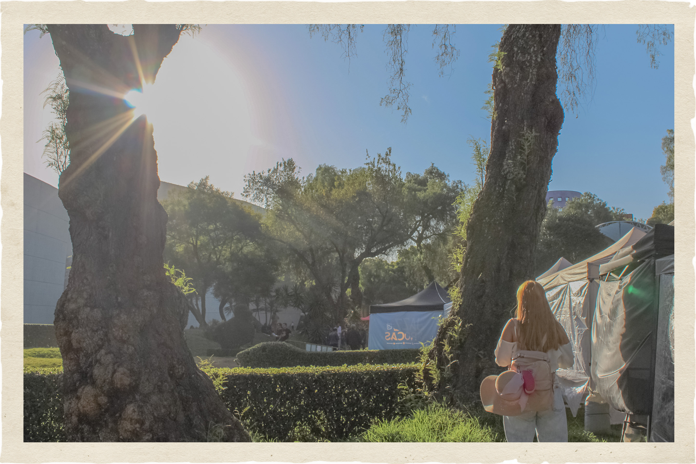
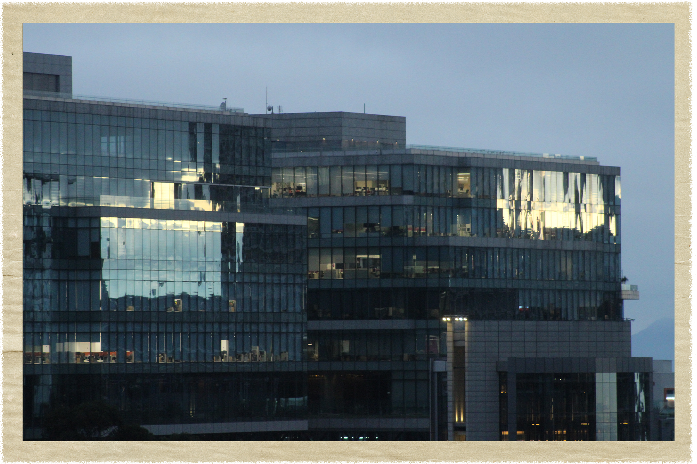
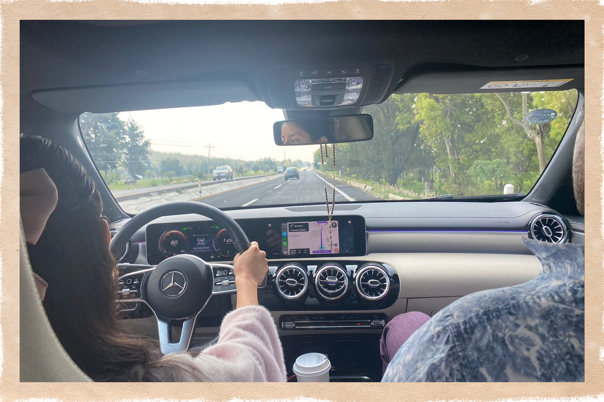

cenizas
personalmente considero mis recuerdos como aquel polvito negro que queda después de una intensa llamarada, frágil resultado de tan intenso evento, capaz de manchar y dejar débiles marcas aún después de que el viento se las llevó, difíciles de acomodar y recoger; tal cuál mis memorias escurridizas, en esta pequeña sección buscaremos juntos alguna forma de evitar que alguna pequeña brisa los aleje permanentemente de mí.

martes, 28 de octubre de 2025
no recuerdo nuestro último abrazo...



